Understanding the Subsurface
The next time you step onto a grassy field consider that beneath your
feet is somewhere between a few centimeters to hundreds of meters of
soil (i.e., dirt), and beneath that are tens of kilometers of rock. Then
consider what do we know about how that soil and rock changes spatially
beneath the grassy field. The answer; very little.
So why don't we know more? The short answer is that "seeing"
into the earth requires specialized equipment and processing techniques,
which makes subsurface imaging (i.e., developing an image of what's
below the surface) cost prohibitive.
So what can we do? Researchers have been working on improving
subsurface imaging for the past century or more, but we still lag
behind other field's with similar imaging needs (e.g., medical imaging).
However, research innovation paired with recent advances in
sensing and computing ensure that proficiency will not continue
to remain beyond our grasp.
My research seeks to advance subsurface imaging
toward more robust and uncertainty-aware solutions through the
intersection of field experiments, numerical simulation, and
high-performance computing with applications in site characterization
and natural hazards.
Current Work
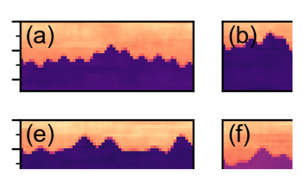
Using Convolutional Neural Networks to Develop Starting Models for 2D Full Waveform Inversion (Vantassel et al., 2021)
Non-invasive subsurface imaging using full waveform inversion (FWI) has the potential to fundamentally change engineering site
characterization by enabling the recovery of high resolution 2D/3D maps of subsurface stiffness. Yet, the accuracy of FWI remains
quite sensitive to the choice of the initial starting model due to the complexity and non-uniqueness of the inverse problem. In
response, we present the novel application of convolutional neural networks (CNNs) to transform an experimental seismic wavefield
acquired into a robust starting model for 2D FWI.
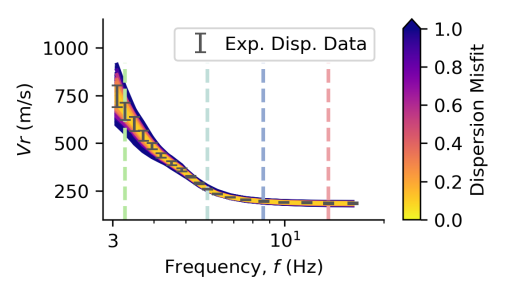
A Procedure for Developing Uncertainty-Consistent Vs Profiles from Inversion of Surface Wave Dispersion Data (Vantassel and Cox 2021)
Non-invasive surface wave methods have become a popular alternative to traditional invasive forms of site characterization
for inferring a site’s shear-wave velocity (Vs). However, the quantification and propagation of uncertainties
from surface wave measurements into the Vs profiles used in subsequent engineering analyses remains challenging.
In response, this paper presents an easy-to-implement, effective, and verifiable method for developing
uncertainty-consistent Vs profiles from inversion of surface wave dispersion data.
Published Work
Journal Publications
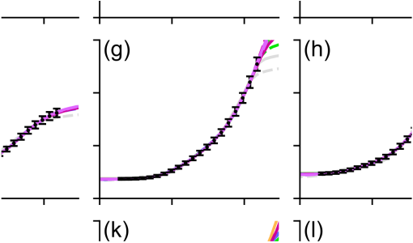
SWinvert: A workflow for rigorous surface wave inversion (Vantassel and Cox 2021)
SWinvert is a workflow for the inversion of surface wave dispersion data. SWinvert encourages analysts to
investigate inversion uncertainty and non-uniqueness in shear wave velocity (Vs) by providing a systematic
procedure and open-source tools for surface wave inversion. In particular, the workflow enables the use of
multiple layering parameterizations to address the inversion’s non-uniqueness, multiple global searches for
each parameterization to address the inverse problem’s non-linearity, and quantification of Vs uncertainty in the
resulting profiles.

Mapping Depth to Bedrock, Shear Stiffness, and Fundamental Site Period at CentrePort, Wellington ... (Vantassel et al. 2018)
Wellington’s port (CentrePort) experienced significant damage from the Mw 7.8 Kaikōura earthquake. To
propose mitigation measures to prevent similar damage in future earthquakes, there was a need to quantify
the port's depth to bedrock, shear stiffness, and fundamental site period (T0). The characterization effort
included horizontal‐to‐vertical (H/V) spectral ratio (HVSR) measurements and active‐source and passive‐wavefield
surface‐wave measurements respectively.
Conference Proceedings

Multi-reference-depth Site Response at the Garner Valley Downhole Array (Vantassel and Cox 2019)
Measured and predicted site response at the Garner Valley Downhole Array are compared using different reference depths/conditions.
Empirical transfer functions (ETFs) from small amplitude ground
motions are compared with 1D linear-viscoelastic theoretical transfer functions (TTFs) calculated using
shear wave velocity (Vs) profiles obtained from both invasive and non-invasive seismic testing.
Suites of non-invasive Vs profiles at the GVDA are shown to produce more accurate TTFs than those from
invasive Vs profiles for all reference depths/conditions.
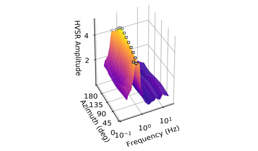
HVSRweb: An Open-Source, Web-Based Application for Horizontal-to-Vertical Spectral Ratio Processing (Vantassel et al., 2021)
The horizontal-to-vertical spectral ratio (HVSR) method has become an increasingly popular tool
for developing a quick and reliable estimate of a site’s fundamental natural frequency. This
paper presents HVSRweb, an open-source, web-based application for performing HVSR
calculations in a convenient, reliable, and statistically-consistent manner.
Software
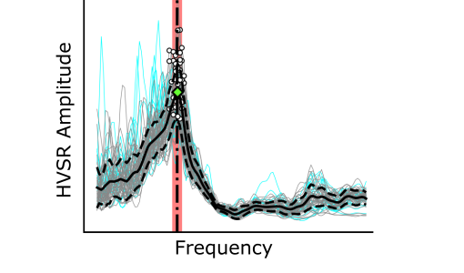
hvsrpy : An Open-Source Python Package for HVSR Processing (Vantassel 2020)
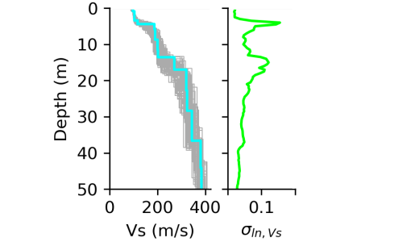
swprepost : A Python Package for Surface Wave Inversion Pre- and Post-Processing (Vantassel 2020)
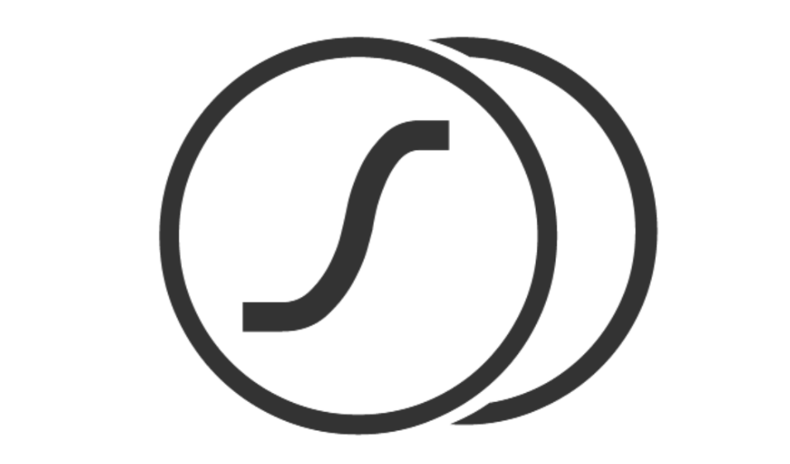
swbatch : A DesignSafe-CI Application for Batch-Style Surface Wave Inversions (Vantassel et al., 2020)
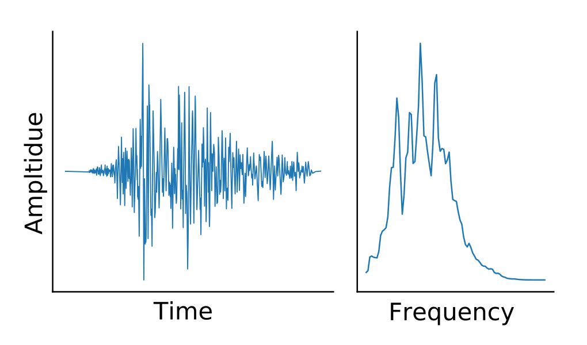
sigpropy : A Python Package for Digital Signal Processing (Vantassel 2020)
Collaborations
Journal Publications
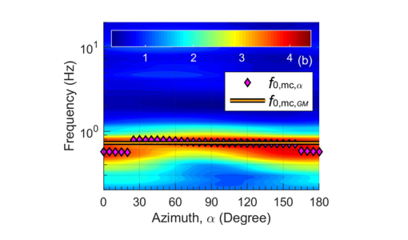
A Statistical Approach to Account for Azimuthal Variability in Single–Station HVSR Measurements. (Cheng et al., 2020)
Cheng, T., Cox, B. R., Vantassel, J. P., and Manuel, L. (2020). “A Statistical Approach to Account for Azimuthal
Variability in Single–Station HVSR Measurements.” Geophysical Journal International,
223(2), 1040-1053, https://doi.org/10.1093/gji/ggaa342
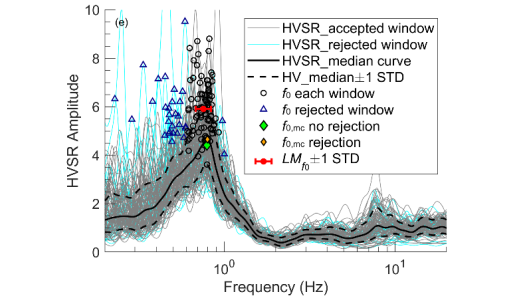
A Statistical Representation and Frequency-Domain Window-Rejection Algorithm for Single-Station HVSR Measurements (Cox et al., 2020)
Cox, B. R., Cheng, T., Vantassel, J. P., and Manuel, L. (2020). “A Statistical Representation and Frequency-Domain
Window-Rejection Algorithm for Single-Station HVSR Measurements.” Geophysical Journal International,
221(3), 2170–2183, https://doi.org/10.1093/gji/ggaa119
Conference Proceedings
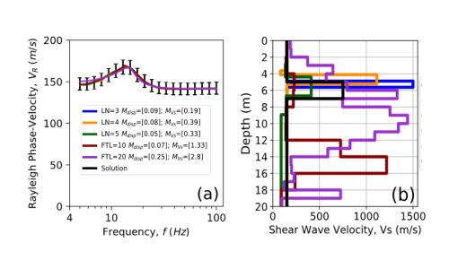
Ability of the MASW Method to Resolve Subsurface Anomalies (Arslan et al., 2021)
Arslan, U., Crocker, J. A., Vantassel, J. P., & Cox, B. R. (2021). “Ability of the Multichannel Analysis of Surface Waves (MASW)
Method to Resolve Subsurface Anomalies.” Proceedings of International Foundations Congress & Equipment Expo (IFCEE). Accepted for oral
presentation and inclusion in conference proceedings.
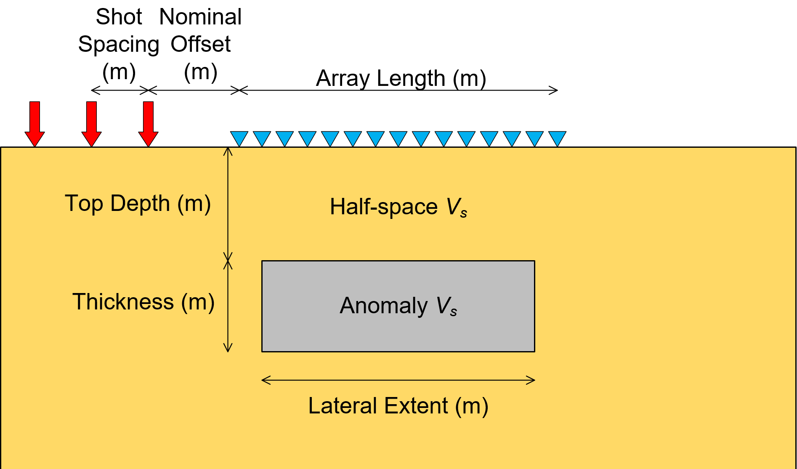
Limitations of the MASW Method for Subsurface Anomaly Detection (Crocker et al., 2020)
Crocker, J. A., Vantassel, J. P., & Cox, B. R. (2020). “Limitations of the Multichannel Analysis of Surface Waves (MASW) Method for
Subsurface Anomaly Detection.” Proceedings of the 6th International Conference on Geotechnical and Geophysical Site Characterization,
Budapest, Hungary. (Postponed due to COVID-19).
Published Data
- Vantassel, J. P. & Cox, B. R. (2020) Surface Wave Inversion Benchmarks [Dataset], in Surface Wave Inversion Benchmarks.
DesignSafe-CI [publisher]. https://doi.org/10.17603/ds2-cpmr-v194.
- Cox, B.R, Spikes, K., Wood, C., Franke, K., Menq, F., Vantassel, J. P., Yust, M., & Stokoe, K. (2020).
NHERI@UTexas Proof-of-Capability Testing Workshop: non-intrusive 3D levee imaging in St. Louis, MO [Dataset].
DesignSafe-CI [publisher]. https://doi.org/10.17603/ds2-1zc5-8n08.
- Cox, B. R. & Vantassel, J. P. (2018) Dynamic Characterization of Wellington, New Zealand [Dataset].
DesignSafe-CI [publisher]. https://doi.org/10.17603/DS24M6J.
Technical Reports
- Cox, B.R., Vantassel, J.P., & Yust, M. (2021). "Deep Shear Wave Velocity Profiling Using MASW and
MAM Surface Wave Methods: Pantex Plant PSHA Site Investigation". January 2021.
- Cox, B.R. & Vantassel, J.P. (2019). "Deep Shear Wave Velocity Profiling Using MASW and MAM
Surface Wave Methods: Amarapura Urban Development Project (AUDP)". October 2019.
- Cox, B.R. & Vantassel, J.P. (2019). "Shear Wave Velocity Profiling Using MASW and MAM
Surface Wave Methods: Wellington Girls' College in Wellington, New Zealand". May 2019.
- Cox, B.R. & Vantassel, J.P. (2017). "Deep Shear Wave Velocity Profiling Using MASW and MAM
Surface Wave Methods: SCDOT Deep Borehole Sites near Andrews and Conway, South Carolina",
Geotechnical Engineering Report GR17-18, The University of Texas at Austin. July 2017.
- Cox, B.R., Teague, D., Vantassel, J.P. & Yust, M. (2017). “Deep Shear Wave Velocity Profiling Using MASW and
MAM Measurements: East Bay Municipal Utility District (EBMUD) Delta Tunnel
Project,” Geotechnical Engineering Report GR17-04, The University of Texas at Austin.
January 2017.
Courses
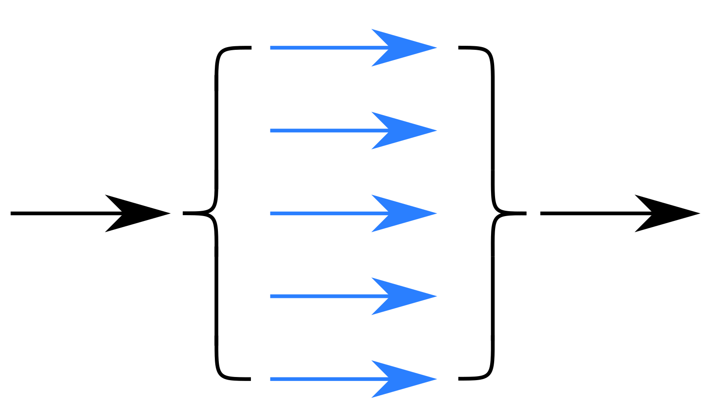
An introduction to parallel programming.

An introduction to Git and version control.

A non-traditional approach to Python 3.

An introduction to the Bourne Again SHell (BASH).